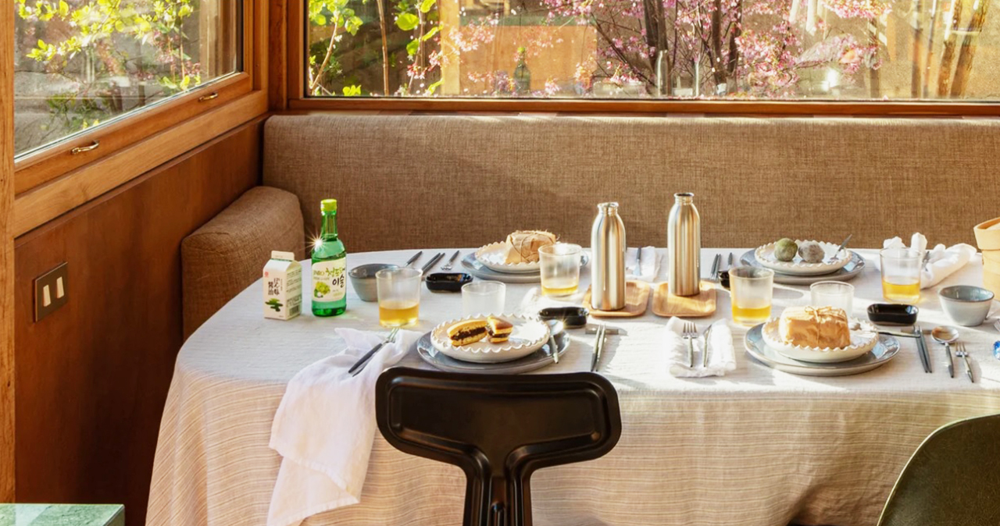
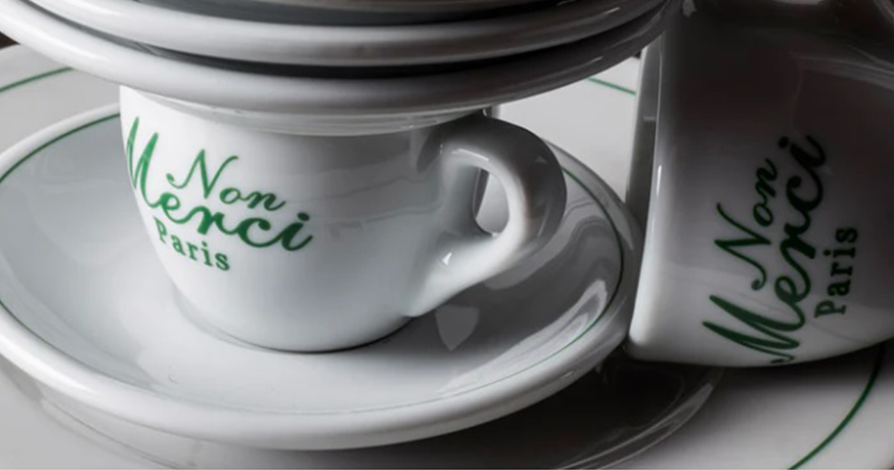
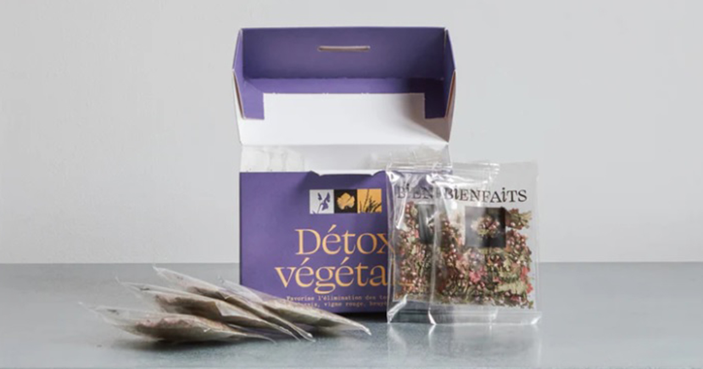
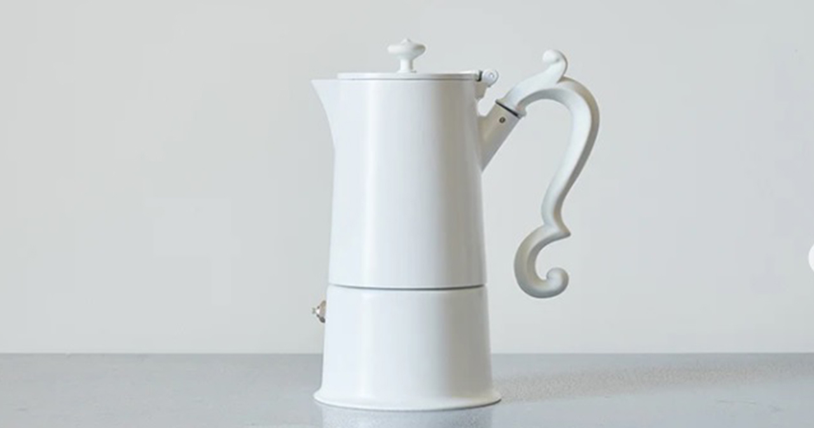

仕事、勉強、育児、家事…時間に追われる日常の中で、美味しくて体に優しいオーガニックコーヒーを飲みながらリラックスできる空間で、ほっとひと息つきませんか？ カフェやスイーツに使われているカップやプレートは、すべてパリで買い付けてきたもの。気に入ったものは、ご自宅でも楽しんでいただけるよう販売もしています。

コーピーに使用している豆は、すべてオーガニック。原産地にこだわったシングルオリジンで、自家焙煎をしています。
コーヒーを愛する人に楽しんでいただきたい珠玉の1杯を、バリスタが心をこめてお作りします。

パリで買い付けたテーブルウェアやティーセット、ここでしか手に入らないアーティストが出がけた雑貨など、大切な方へのギフトにもぴったりです。

コーヒーサーバーやオリジナルケトルなどの販売も行っています。ご自宅でも至福のコーヒータイムをお過ごしください。詳しくはフタッフまで。
コーピーに使用している豆は、すべてオーガニック。原産地にこだわったシングルオリジンで、自家焙煎をしています。
素材と美味しさにとことんこだわり、身体が喜ぶブレッドを提供しています。コーヒーと一緒にどうぞ。
お誕生日会、結婚パーティーなど、各種パーティーの貸し切りも可能です。詳しくはスタッフまでお問い合わせください。
コーピーに使用している豆は、すべてオーガニック。原産地にこだわったシングルオリジンで、自家焙煎をしています。
コーヒーを愛する人に楽しんでいただきたい珠玉の1杯を、バリスタが心をこめてお作りします。
コーピーに使用している豆は、すべてオーガニック。原産地にこだわったシングルオリジンで、自家焙煎をしています。
コーヒーを愛する人に楽しんでいただきたい珠玉の1杯を、バリスタが心をこめてお作りします。